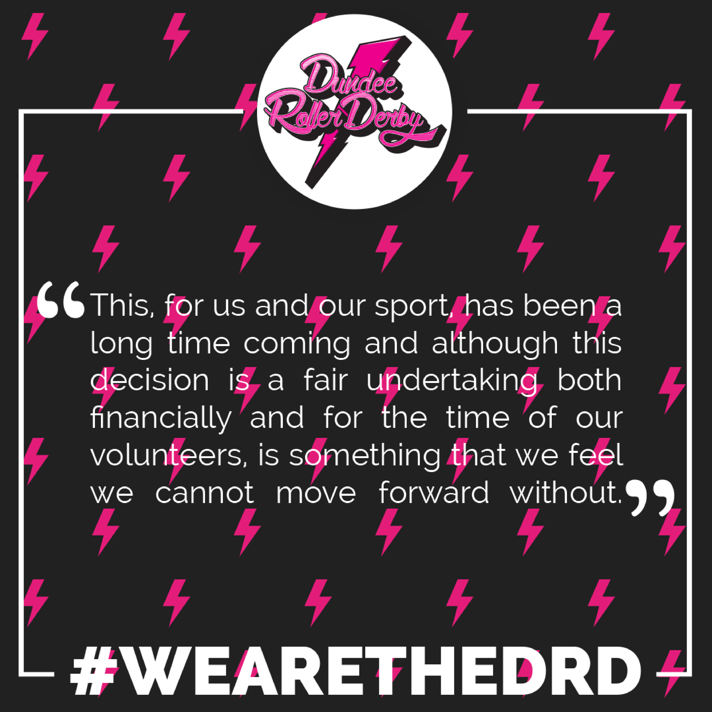

Non-US/Canadian Derby Roundup:28th/29th Apr Edition
Predictions of bouts are from FTS, if possible, and from our own SRD Rank where FTS cannot make predictions (for example: Latin America, or non-MRDA men’s bouts). (SRDRank also has recent WFTDA rankings, including the 31st June ranking, as well as SRDRank, and allows you to make predictions from them.)
If we’ve missed you from our roundup, please let us know! [Or add yourselves to FTS and/or Derbylisting]
(Note: we're especially likely to be missing items this week, as Facebook's response to the Cambridge Analytica scandal has resulted in them turning off large parts of the services we use to automatically collate events for this article. We don't think we've missed too much, but...)Scotland
There's not much in Scotland this weekend, probably due to the Louisey Rider Cup dominating the UK schedule as a whole.- Wednesday (25th), Dalkeith: Fear and Lothian host their City of Superheroes Scrim, an open-gender mixed scrim event [EVENT]
- Friday, Dundee: Dundee Roller Derby host their regular open scrims - this edition is Open To All genders [EVENT]
- Sat, Aberdeen: Granite City Roller Derby would like to invite you to come along and watch Whip It at the Belmont Filmhouse [EVENT]
United Kingdom
There's no British Champs bouts this weekend, to make room for the Louisey Rider Cup, which is also our most important event in the UK.- Friday, Swindon, England: Wiltshire Roller Derby host their Open Mixed Scrim, which runs a complex alternating jam format for different types of gender policy [EVENT]
- Friday, Wakefield, England: Wakey Wheeled Cats host their Friday Night Skate. [EVENT]
- Leeds, England: Leeds Roller Derby host a double header [EVENT]
- Leeds Roller Derby B versus Furness Firecrackers (Barrow-in-Furness) [FTS]
- Leeds Roller Derby "Challenge Team" versus Minxcadias (York Minxters + Arcadia Roller Derby [Manchester])
- Oldham, England: Rainy City Roller Derby also host a double header [EVENT]
- Rainy City Tender Hooligans (B) versus Tiger Bay Brawlers (Cardiff) [FTS]
- Rainy City Revolution (C) versus Vagine Regime UK (exhibition team)
- Nottingham, England: The Louisey Rider Cup returns for 2018, as Nottingham Roller Derby remember and celebrate Louisey Rider via the medium of playing a full tournament of All Gender roller derby with mashup teams! [EVENT]
- South Bank, England: Teeside Skate Invaders host their intake for any skaters interested in joining [EVENT]
- Sunday, Carlisle, England: Border City Roller Derby host a "skate and eat cake" try-derby event [EVENT]
- Sunday, Newton Longville, England: Rebellion Roller Derby host their intake day [EVENT]
- Sunday, Oadby, England: Leicestershire Dolly Rockit Rollers host an Open To All genders scrim, rescheduled from last week [EVENT]
- Sunday, Oxford, England: Oxford Roller Derby host their own mixed scrim - no gender statement made [EVENT]
- Sunday, Wallasey, England: Wirral Roller Derby hosts an Open To All genders scrim (all skater spaces full) [EVENT]
- Monday, Birmingham, England: Birmingham Blitz Dames host an open scrim - open to female-identifying skaters - with their B-team, whilst the A-team are off in the USA. [EVENT]
Europe
As usual, there's a huge amount of Roller Derby happening in Europe, especially in France (which features two weekend tournaments, in addition to other events)!- Sat, Vienna, Austria: Vienna Roller Derby host a bout for their B team Vienna Beasts [EVENT]
- Vienna Beasts versus Prague City Roller Derby [FTS]
- Sat, Tampere, Finland: Tampere Roller Derby host a bout for their B team [EVENT]
- Howlin' Rolls versus Jyväskylä Roller Derby [FTS]
- Sat, Clermont-Ferraud, France: the Auver'niaks host a triple header event against Saône Valley, with some junior derby too! [EVENT]
- Sat/Sun, Le Mans, France: Roller Derby 72 host NEVER TRACK DOWN II, a two-day 4-team round robin French tournament. [FTS Tournament][EVENT]
- Nasty Pècheresse (Montreuil) versus Passeuses Dâmes (La Roche sur Yon)
- Missfeet (Le Mans) versus Morues (Lorient)
- Passeuses Dâmes versus Morues
- Missfeet versus Nasty Pècheresses
- Morues versus Nasty Pècheresse
- Missfeet versus Passeuses Dâmes
- UB Black versus UB White (mixed exhibition bout)
-
Sat/Sun, Grenoble, France: the Cannibal Marmots host J'irai Jammer Sur Vos Tomes 4, as their yearly tournament returns! [FTS Tournament][EVENT]
- Cannibal Marmots Ahhh versus La Barbaque (Paris)
- Namur B versus La Barbaque
- Namur B versus Cannibal Marmots Ahhh
- Vagine Regime versus Unnamed Bitches (exhibition/mixed)
- Match «Tempête sur le Track»
- Marmotines versus UB (exhibition/mixed)
- La Bande à ta mère (Lyon B) versus Criminal Nurses (Aubenas) + fresh
- Cannibal Marmots Bééé versus Criminal Nurses + fresh
- Cannibal Marmots Bééé versus La Bande à ta mère
- Sat/Sun, Aubergenville, France: Les Succubes host a two-day event, I Love Track and Roll - a Sur5al Tournament, with a musical theme. [EVENT]
- 30 Team round-robin Sur5al (21529 = 14 hours of track time!)
- Teams with maximum of 2 men, no limit on women or non-binary people.
- Sat, Nancy, France: Wheel Spirit Roller Derby host a double header [EVENT]
- Sat, Nice, France: the Baywitch Project host a triple header round robin against Bordeaux and Sheffield [EVENT]
- Sat, Toulouse, France: Roller Derby Toulouse host a double header [EVENT]
- Nothing Toulouse (Toulouse W) versus London Rollergirls B [FTS]
- Quad Guards (Toulouse M) versus UB ("Surprise" team)
- Sat, Berlin, Germany: Bear City Roller Derby host a (closed?) series of bouts with Auld Reekie Roller Girls, Kallio Rolling Rainbow and Paris Rollergirls... There's only a Facebook event for the afterparty!
- Sat, Münster, Germany: Zombie Rollergirlz host a Bundesliga Div 2 bout [FTS Tournament][EVENT]
- Zombie Rollergirlz Münster versus Delta Quads (Mannheim)
- Sat, Dublin, Ireland: Whilst Dublin A are off in the USA (see below), Dublin Roller Derby B and C host London Rockin' Rollers [EVENT]
- Sat, Waterford, Ireland: Waterford City ViQueens host Victory or Valhalla, a modified rules tournament (20 minute games) with 6 teams playing [EVENT]
Competing teams are:
- Brain Damage - Roller Derby Angoulême
- Belfast Roller Derby
- East Coast Cyclones (Wicklow)
- Cork City Firebirds
- Limerick Roller Derby
- Waterford Viqueens
- Sat, Rimini, Italy: The Stray Beez host a double header scrimmage, as part of Rimini Sports Festival [EVENT]
- Stray Beez Rimini versus The World
- Seasters (Adriatic coastal region) versus The World
- Sat, Madrid, Spain: the first ever General Assembly of the newly formed Asociación de Roller Derby España - the Spanish National Governing Body for Roller Derby, formed from all teams in Spain will happen, followed by a bootcamp led by Team Spain Roller Derby [EVENT]
- Sat, Regensdorf, Switzerland: Zürich City Rollergirls B host a bout [EVENT]
- Zürich B versus Rolling Furies (Lausanne) [FTS]
- Sun, Antwerp, Belgium: One Love Roller Dolls host a single bout for their B team [EVENT]
- One Love Roller Dolls Pack of Destruction (Antwerp B) versus Arnhem Fallen Angels [FTS]
- Sun, Pamiers, France: Les Dégoupilleuses host the third part of the Trophée Chocolatine (the Chocolate Cup) tournament for teams in the Occitane region [EVENT]
Featuring:
- Bloody Patchol's (Albi)
- Block Busters (Montpellier)
- Head Hunters (Narbonne)
- B-Bones (Nimes B)
- Les Dégoupilleuses (Pamiers)
- Coccyx Lexis (Perpignan)
- Green is the New Block (Pibrac)
- Full Metal Punkettes (Tarbes)
- Rainbow Furies (Toulouse B)
- Sun, Sarreguemines, France: The Mechanical Dolls host a triple header round robin event [EVENT]
- Mechanical Dolls versus Rolling Zombie Dolls (Tournai) [FTS]
- Rolling Zombie Dolls versus Team Champagne (Saint Dizier / Troyes / Reims co-op)
- Mechanical Dolls versus Team Champagne
- Sun, Tourcoing, France: Roller Derby Tourcoing host a double header event - the first ever bout for Les Gueules Noires! [EVENT]
- Roller Derby Tourcoing versus Les Gueules Noires (Lens) [FTS]
- Open Scrimmage ("mixed")
-
Sun, Toulouse, France: Roller Derby Toulouse host a bootcamp run by Nothing Toulouse, for anyone coming to their city for the double header the day before [EVENT](Event deleted!) - Mon and Tues, Rimini, Italy: The Stray Beez continue their events as part of Rimini Sports Festival with outdoor skating, including demonstrations of Roller Derby, and the chance to sign up with the league [EVENT]
Pacific
The Pacific schedule is dominated also by fixtures for regular tournament series, as Open Season and 5x5 both host events this weekend.- Brisbane, QLD, Australia: Round 2 of Open Season 2018 is in Brisbane and sees both Division 2 and Division 1 games, as well as a men's derby bout [FTS Tournament][EVENT]
- Runaways (North Brisbane Rollers B) versus Violet Femmes (Brisbane City Rollers B) [Div 2]
- Black Hearts (North Brisbane Rollers C?) versus Valley Valkyries (Tweed Valley Rollers) [Div 2]
- Banshees (Brisbane City Rollers C?) versus East Coast Derby Dolls (Gold Coast) [Div 2]
- Frankies versus Uppercuts [Men's exhibition bout - BCR skaters]
- Cherry Bombs (North Brisbane Rollers) versus Punk Blockers (Brisbane City Rollers) [Div 1]
- Katoomba, NSW, Australia: Blue Mountains Roller Derby League host the next fixtures in the 5x5 Roller Derby Championship [FTS Tournament][EVENT]
- Western Sydney versus Maitland (B tier)
- Newcastle Roller Derby League versus Inner West Roller Derby (A tier)
- Hawkesbury/Hills Area Roller Derby versus South Side Roller Derby (B tier)
- Blue Mountains Roller Derby League versus Central Coast Roller Derby (A tier)
- Levin, New Zealand: Whenua Fatales Roller Derby host a quadruple header of Roller Derby! [EVENT]
- Sun, Brisbane, QLD, Australia: Northern Brisbane Rollers host a "Sausage Sizzle" fundraiser [EVENT]
- Sun, Christchurch, New Zealand: Otautahi Roller Derby League host their Fresh Meat "graduation bout", as their newest mins-passed skaters play Timaru Derby Dames' equivalents in a friendly [EVENT]
Latin America
In Latin America, the biggest thing is the third Copa Del Fuego in Mexico!- Friday, Cordoba, Argentina: Hiedras Roller Derby host their second intraleague bout, as Equipo Amarillo play Rojo (that's Yellow versus Red). There's no Facebook event for this, so we're linking to the flyer image [FLYER]
- Sat/Sun, Blumenau, Brazil: the Iron Ladies host the 2018 edition of Twisted and Mixed, their yearly bootcamp and tournament festival for Brasilian roller derby. [EVENT]
- Morning sessions: bootcamps [Skater and Officials]
- Afternoon sessions: bouts, both with and without contact
- Evening sessions: party!
- Sat/Sun, San Luis Potosí, Mexico: The third Copa del Fuego - the yearly men's and women's derby tournament in San Luis Potosí is hosted by Furiosas Roller Derby and Team Bastardo [FTS tournament][EVENT] competing are:
- Monterrey Roller Derby [W]
- Delicious Wheels (Celaya) [W]
- Liga Tamaulipas Roller Derby [W]
- Ravens (Queretaro Roller Derby) [W]
- Tekillerass (Roller Derby Cuidad Mexico) [W]
- Furiosas (San Luis Potosí) [W]
- Crows (Queretaro Roller Derby) [M]
- Minotauros (Roller Derby Cuidad Mexico) [M]
- Malditos Perros (Morelia/Michoacan) [M]
- Team Bastardo (San Luis Potosí) [M]
- Sunday, Mexico City, Mexico: Discordias Roller Derby host Mexico City Roller Derby for a bout (only publicised on Thursday!) [FTS] [EVENT]
- Monday, Montevideo, Uruguay: Pajaros Pintados promise us an "announcement".
Africa and Middle East
We're not aware of any events in Africa and the Middle East this weekend.Elsewhere
Events of interest to us because they involve European teams, in North America:- Fri-Sun, Columbia, South Carolina: Carolina QuadSquad host the 2018 SOUTHERN DISCOMFORT tournament. Dublin Roller Derby A are attending (whilst the rest of Dublin plays closer to home. [FTS Tournament][EVENT]
- Dublin versus Ann Arbor
- Dublin versus Charm City Roller Girls (Baltimore)
- Dublin versus Oklahoma Victory Dolls Roller Derby
- Dublin versus Columbia QuadSquad
- Fri-Sun, Kalamazoo, Michigan: Kalamazoo Derby Darlins' K Town Shakedown 2018 features, amongst others, Birmingham Blitz Dames. [FTS Tournament][EVENT]
- Birmingham v Royal City (Guelph)
- Birmingham v Grand Raggidy (Grandville, Michigan)
- Birmingham v Chicago Outfit
Non-US/Canadian Derby Roundup:21st/22nd Apr Edition
Predictions of bouts are from FTS, if possible, and from our own SRD Rank where FTS cannot make predictions (for example: Latin America, or non-MRDA men’s bouts). (SRDRank also has recent WFTDA rankings, including the 31st June ranking, as well as SRDRank, and allows you to make predictions from them.)
If we’ve missed you from our roundup, please let us know! [Or add yourselves to FTS and/or Derbylisting]
(Note: we're especially likely to be missing items this week, as Facebook's response to the Cambridge Analytica scandal has resulted in them turning off large parts of the services we use to automatically collate events for this article. We don't think we've missed too much, but...)Scotland
Like last week, Scotland has two fixtures this week, both double-headers (and one for British Champs Tier 3 North).- Fri, Falkirk,Scotland,United Kingdom: Bairn City Rollers host their Roller Derby New Skaters Session, open to all genders. [EVENT]
- Sat, Aberdeen,Scotland,United Kingdom: Granite City Roller Derby present GCRD Host British Championships T3N Double Header 2018 [FTS Tournament][EVENT]
- Granite City Roller Derby versus Halifax Bruising Banditas
- Wakey Wheeled Cats (Wakefield) versus Newcastle Roller Derby Whippin Hinnies (B)
- Sat, Inverness,Scotland,United Kingdom: Inverness City Roller Derby host a double header.[EVENT]
- Inverness City Roller Derby versus New Town Roller Girls [FTS]
- Team EPIC (Elgin/Perth/Inverness) versus Team Black
- Sun, Blackburn, Scotland, United Kingdom: Glasgow Men's Roller Derby host Jammer Club #7, the latest iteration of their regular, Open To All, jammer-skills minibootcamps. [EVENT]
United Kingdom
There's a huge number of British Champs fixtures this weekend, and an 8th birthday for Tiger Bay Brawlers!- Thurs, Cardiff,Wales,United Kingdom: Tiger Bay Brawlers' Learn to Skate course continues[EVENT]
- Thurs, Flint,Wales,United Kingdom: North Wales Roller Derby host their Men's Monthly Scrim | Open To All Skill Levels [EVENT]
- Sat, London,England,United Kingdom: London Rockin' Rollers host British Champs Tier 1 game as part of a double header [FTS Tournament][EVENT]
- London Rockin' Rollers Badasses (B) versus Liverpool Roller Birds Yellow Shovemarines (B) [FTS]
- London Rockin' Rollers All-Stars versus Liverpool Roller Birds A [Champs]
- Sat, Wolverhampton,England,United Kingdom: Wolverhampton Honour Rollers present Roller Derby British Champs - Women's T3 West [FTS Tournament][EVENT]
- Hereford Roller Derby versus Riot City Ravens
- Wolverhampton Honour Rollers versus Leicestershire Dolly Rockit Rollers
- Sun, Cardiff,Wales,United Kingdom: Tiger Bay Brawlers host a party for their 8th birthday, including open scrims [WFTDA gender policy]! [EVENT]
- Sun, Leicester,England,United Kingdom: Dolly Rockit Rollers host their April Open-To-All Scrim, for all mins-passed skaters of any gender [EVENT]
- Sun, Manchester,England,United Kingdom: Manchester Roller Derby host their regular Mixed Level Open All Gender Scrim [EVENT]
- Sun, Oldham,England,United Kingdom: Rainy City Roller Derby host a Pre-minimum Skills Bootcamp [EVENT]
- Sun, Crewe, England, United Kingdom: Railtown Loco-Rollers host British Champs Tier 4 West (with an event not owned by the page, oddly) [FTS Tournament][EVENT]
- Blackpool Roller Derby versus Riverside Rebels () [FTS]
- Arcadia Roller Derby (Manchester) versus Railtown Loco Rollers
- Sun, Cambridge,England,United Kingdom: Cambridge Rollerbillies present British Championships Double Header - T3W South [FTS Tournament][EVENT]
- Killahurtz Roller Derby versus Cambridge Rollerbillies
- Wiltshire Roller Derby versus Dorset Roller Girls
- Sun, South Bank, England, United Kingdom: Teeside Skate Invaders host the Brisih Champs Tier 2 Men. [FTS Tournament][EVENT]
- Teeside Skate Invaders versus Super Smash Brollers (Birmingham)
- Oxford Men's Roller Derby versus Lincolnshire Rolling Thunder B
Europe
There's a bunch of national teams tournament fixtures this weekend - the French Championnat division 1, and several Bundesliga bouts... but also a huge number of other tournaments, including Nantes Derby Girls' regular West Track Story.- Thurs, Avignon,Provence-Alpes-Côte d'Azur,France: Rabbit Skulls Roller Derby andWarren Track Fighters host their recruitment/initiation day, for all genders. [EVENT]
- Sat, Copenhagen,Zealand,Denmark: Copenhagen Roller Derby host a Roller Derby Tripleheader [EVENT]
- Sat, Anglet, France: Roller Derby Côte Basque host a bout [EVENT]
- Valient Bitchez (Anglet) versus Castres Roller Derby [FTS]
- Sat, Calais,Nord-Pas-de-Calais,France: Roller Derby Calaisis also host a triple header [EVENT]
- Zombeers (Calais M) versus Unnamed Basterds (UK+FR+BE mashup)
- Dead Dragibus (Calais J) versus New Bournes (Eastbourne J)
- Black Tagada (Calais W) versus Bourne Bombshells (Eastbourne W) [FTS]
- Sat, Nantes,Pays de la Loire,France: Nantes Derby Girls host the 6th West Track Story tournament [FTS Tournament][EVENT] featuring
- Antwerp Roller Derby
- Tampere Roller Derby
- Nottingham Hellfire Harlots
- Amsterdam Roller Derby
- Nantes Derby Girls
- Sat-Sun, Metz, France; Roller Derby Metz Club host the Championnat de France Nationale 1 North fixtures[FTS Tournament][EVENT]
- Paris Roller Girls Quedalles (B) versus Orcet Roller Derby La Horde
- Les Déferlantes (Rennes B) versus Switchblade (Roller Derby Lille A)
- Roller Derby Metz Club All Stars versus Encastreuses (Lutèce A)
- Les Déferlantes versus La Horde
- Roller Derby Metz Club All-Stars versus Switchblade
- Les Déferlantes versus Quedalles
- Encastreuses versus La Horde
- Sat, Mannheim,Baden-Württemberg,Germany: The Delta Quads host a double header [EVENT]
- Sat, Cologne (Köln), Germany: Cologne Roller Derby host a Bundesliga div 2 bout against the RockARollers of Karlsruhe [FTS Tournament][EVENT]
- Sat, Munich, Germany: Munich Rolling Rebels' Bundesliga div 1 bout as part of a double header [FTS Tournament][EVENT]
- Munich Dynamite (A) versus Ruhrpott Roller Girls [Bundesliga]
- Municorns (Munich B) versus Riot Rollers Darmstadt B [FTS]
- Sat, Rome,Lazio,Italy: Roma Roller Derby host The Amazing Boot Camp! [EVENT]
- Referee bootcamp by Shref and Wonder Zebra
- Skater bootcamp by Miracle Whips
- Closing scrims
- Sat, Den Haag,Zuid-Holland,Netherlands: Parliament of Pain host a Double Header [EVENT]
- Sat, Rotterdam, Netherlands: Rotterdam Roller Derby host a double header against Kent and Warsaw [EVENT]
- Sat, Oslo,Oslo,Norway: Oslo Roller Derby present The Challenge 2018 [EVENT]
- Three-way Roller Derby tournament, with teams "Earth", "Wind" and "Fire"
- Sat, Gothenburg, Norway: Dock City Rollers host a double header [EVENT]
- Sun, Prague, Czech Republic: The Hard Breaking Dolls host another Open Practice for those interested in trying roller derby [EVENT]
- Sun, Nîmes,Languedoc-Roussillon,France: Bones Breakers Roller Derby host a Triple Header [EVENT]
- Sun, Épinal,Lorraine,France: Roller Derby Épinal host Pâques is Here, a Double Header [EVENT]
- Sun, Stuttgart, Germany: Stuttgart Valley Roller Derby host Strasbourg Roller Derby for a bout [FTS][EVENT]
Pacific
The big event in the Pacific is the Gold Coast's yearly Royal Rumble Roller Derby Tournament!- Fri-Sun, Gold Coast, QLD, Australia: The 2018 Royal Rumble Roller Derby Tournament brings together much of the action in Australia. [FTS Tournament][EVENT] Attending teams:
- Notorious VICs (Victorian C)
- East Coast Derby Dolls (Gold Coast)
- Radeladies (Adelaide B)
- North Queensland
- Northside Rollers (Melbourne)
- North Brisbane Rollers
- Sydney Coastal Assassins
- Sun State Roller Girls (Brisbane/Logan)
- Western Australia Roller Derby (WARD -
- Convict City Roller Derby (Hobart, Tasmania)
- Perth Roller Derby
- Southside Derby Dolls (South Sydney)
- Brisbane City Rollers
- Tweed Valley Rollers
- Canberra Roller Derby
- Sat, Rimutaka, Australia: Rimutaka Roller Derby host their first ever game, against Peowhairangi Wildlings! [FTS][EVENT]
- Sun, Okinawa,Kyushu,Japan: Devil Dog Derby Dames' Beginner Skate Lessons continue[EVENT]
Latin America
In Latin America, there's some derby, including Bogota's continuing city-wide tournament series, the (5th) Torneo Distrital.- Sun, Buenos Aires, Argentina: Sailor City Rollers host a double-header of roller derby [EVENT]
- Sailor City Sea Monsters (C) versus El Mundo (The World) [open subscription, WFTDA-gender-rules team]
- Sailor City All-Stars (A) versus El Mundo [a different roster]
- Sun, Bogotá, Colombia: The 5th edition of the city of Bogota's District Tournament continues with a double header [FTS Tournament][EVENT FLYER]
- Fugitivas Rollerpunk versus Combativas Revoltosas
- Bogota Bone Breakers versus Rock N Roller Queens
- Sun, Viña del Mar,Valparaíso,Chile: Tacones Bandidos host a bout. [EVENT]
- Aukan versus Tacones Bandidos [FTS]
- Sun, Mexico City, Mexico: Discordias (the self-described women's league part of EMEXRD) play Tekillerass (similarly, part of LRDCM) [FTS][EVENT]
- Sun, Celaya, Mexico : Roller Derby Celaya hosts their regular opponent, Morelia's Ovejas Negras for a bout [FTS] [EVENT]
Africa and Middle East
We're not aware of any events in Africa and the Middle East this weekend.Who Are We? NTRG!: New Town's thoughts on their upcoming game in Inverness.
Our game against Inverness City Roller Derby is less than a week away for us at NTRG and we’re eager to share our thoughts on it with you! 4 of our skating team have answered what they are most looking forward to; what they’ve been doing outside of training to prep for the game and who they think will win! Storm in a D Cup, Millie Manslaughter, Mother Tucker and Hazzard are here to share their pre game insights with you all!
Storm in a D Cup 69

The thing I am looking forward to most about game day is that feeling of team comraderie. The sick, excited and nervous butterflies-in-your-stomach feeling as we all pile into the bus or car. How we will all send a million messages to our team mates sharing experiences, offering support and motivation. I am not someone who has ever been involved in sport. I now look back with a bit of regret that I did not do something like this when I was younger. I feel grateful for finding something that I am proud of, for finding all these amazing women who are completely different, but for one day the same. We are all trying our best to succeed, support and survive.
Time is my biggest challenge in most things. Full time work, family and trying to maintain a reasonable quality of life leaves me spread a bit thin. When it comes preparing for an upcoming game I find I absorb myself in You Tube videos for hints and tips, watch games on my phone during my commute, and practise in the kitchen while doing laundry and the dishes. I am lucky that my kids love skating, helping them and playing skatey games not only improves my skills but keeps me calm, it always reminds me that I am doing this for fun.
The one thing I have discovered is that it’s not important who wins. After past games it is the last thing we talk about. We laugh and joke, while comparing bumps and bruises. We learn and grow from our experience playing with other teams. We become better players. I know we all will try our best, and if we lose we will still hold our heads high and celebrate with the victors without fear of being judged as inferior. Just as I know we won’t judge them….when we kick their butts!
Millie Manslaughter 5

I am looking forward to seeing how well the team comes together because we have been working and training hard so it will be great to see if our hard work has payed off or not. It will also be nice for the team to spend some time together.
I have recently bought a pushbike. I’m loving going out , having the wind in my face and the freedom of just pedalling with no end goal. I have also started doing the 5k parkrun on a saturday morning. It's so much more fun than a treadmill.
Mentally I made myself a list of goals for this game at the beginning of march and I think about them each training. I have also been watching more derby online so that I canlearn more and improve my gameplay.
I'm not sure who will win but I can predict it will be exciting!!
Watch out Inverness, Millie Manslaughter's coming for you!! 😀😀
whoarewe #NTRG
Mother Tucker 79

The pre-match build up: Skating out with the team before the game - it’s great to go out and hear everyone cheering your team. When your name’s announced, you feel all special for a moment or two, then you cheer all the other team members! Also, huddling round just and doing our chant is pretty awesome.
I try not to overthink games! From a physical training point of view, I went along to a GMRD session recently which was a real eye-opener. Their level of gameplay is so fast and tactical and I learned so much in just a couple of hours. I followed that up by playing in an ARRG event last week which was brilliant. It gave me a chance to practice some of the things we’ve been working on at our team training sessions and I played really well and came out of it feeling amazing!
I think it’ll be a good game to watch and if we can communicate well and put into practice what we’ve been focusing on at training, then I reckon NTRG will win!
Hazzard 810

I’m very much looking forward to playing with the team! It’s the first time we’ve been able to train for and play games consistently within a short period of time and it’s a great bonding experience not just for the skating team but for the entire league as well! We have a host of supporters coming up for Inverness so it’s gonna be NTRG tastic!
I’ve been hitting the gym a lot lately as I have some personal derby goals that I’m wanting to achieve which require me to up both my mental and physical derby game. For the mental side I’ve been watching tons of games online and just drilling derby in to my head even more so than it already is! It’s definitely helping me reach new derby heights and as Inverness is now just round the corner I’m eager to see if all the hard work has been paying off!
I hope that it’s us but I think it’s going to be closely matched either way! We seem very similar to ICRD in the array of experience in our skating teams and that’s bound to make for a super exciting game between us!
- Inverness City Roller Derby host New Town Roller Girls as the first bout in their double header 21st April 2018. (The second bout sees Team EPIC play Team Black.) Doors open at 12:30.
Dundee's Derby Rebrand!
The Dundee league previously known as DRG have re-branded to Dundee Roller Derby this month. Although league members have been hinting at this for a while, the financial and business aspects, have led to a longer than expected timeframe for this re-brand. 
With it well underway however, we spoke to a few league members to understand what this means to them, obviously paired with a few snapshots of the league!
"For me, every single league member deserves to be part of our name, rather than only those that identify with the word "girls"." - Gegg
"I started roller derby at 36, I hadn't been a girl for a long time. Think this is brilliant and so much more inclusive". - Emma Belter
"It shows the progression and maturity of our league. We showed what we can do on track last year and made our name as a league by our games, now we are taking another step and showing our league for who we really are and what we believe in. Seeing everyone as an individual and including all as part of DRD". - Goldginger
"When we say: We Are The DRD at games, it really will mean "we" now!" - Nichola
"The change of name represents the bigger changes that are happening in roller derby worldwide, and our name will now finally reflect every member of our league." - Liston
"I personally identify as a girl, but it took me a long time to be okay with that, and I think it's really cool that people that don't are now part of the league not just in person but in name to!" - Amy
"The rebrand shows we are a league inclusive and transparent to everyone. Everyone is heard!" - Tiny Tearaway
It means to me that we can be fully inclusive of everyone, and convey that message on to this and the next generation as well that anyone can do Derby, you just have to believe in yourself!" - KinKhey
"This change signifies that we are not just skaters here. We are officials, volunteers, NSOs, friends and family. Dundee is an inclusive league of everyone; anyone wishing to be a member of our league can be and that is now represented in our name."- Shuggs Bunny
[gallery ids="26605,26604,26602,26603,26598,26600,26599,26601" type="rectangular"]
MRDWC2018 Day 1: Scores and Analysis
This year, the Men's Roller Derby World Cup is trying something new with its tournament format. Nothing so radical as the Roller Derby World Cup in Manchester - they're still using Groups and Elimination to sort their teams - but they're playing a bit with that transition from Group to Elimination Tournament in an interesting way.
Traditionally, we want to arrange the number of Groups to be a power of 2 - 2,4,8 - because this means that if we allow the top 1 or 2 to graduate in each Group, we also have a power of 2 number of teams playing in the Elimination phase. Elimination phases work most straightforwardly when there are a power of 2 teams playing, so this is a good thing.
MRDWC also wants a power of 2 number of teams in their Elimination - they want 8 of them - but there are 24 teams playing. (Originally, there were 25, which is even worse, and that situation made the following approach look like the best one.) Whilst 24 is divisible by 8, the result is 3, and Groups of 3 are rather hard to balance well; similarly, Groups of 6 (with 4 such) are quite large, and need a lot of games per Group (15, for a total of 60 games in the Group phase). Instead, MRDWC have decided to have 6 Groups of 4...
...but this leaves them with the problem of how do you pick 8 teams to go forward, when there's only 6 Groups? The solution MRDWC have adopted is to allow all 6 "winners" of their Group to go through, and then supplement them with the "best" 2 of the 2nd-place teams in the Groups. (That is: of the 6 teams who placed 2nd in a Group, we try to pick the best 2 of them.) This is obviously tricky to do fairly, and the solution which MRDWC are using is to assume that the "total points difference, not counting the worst game" is a fair enough yardstick.
All of the teams have played 2/3 of their games now, at the end of Day 1, so we should have a pretty good idea of how they're doing - and we can have a stab at using inference to predict their final games, too, to make a prediction of who will get those two extra Elimination Slots.
Where we have used actual scores, these are taken from the official MRDWC score page, linked at the top of this article.
Groups: RED ORANGE YELLOW GREEN BLUE PURPLE Day Two: Predictions and Games To Watch Starting with Group RED:
the Scores to date are:
USA 286 : 0 NED BEL 189 : 53 JPN USA 311 : 0 JPN BEL 164 : 46 NED
Given that the USA are very likely group winners, we can ignore games against them for points difference, as those will be the worst games for the other team - as a result, we only know Belgium's final "effective" P/D for the group, which is 254. Japan take their -136 from the Belgium game, and will add to it their P/D against Netherlands tomorrow. Similarly, Netherlands take their -118 from their Belgium game, and will add it to the P/D from the same game against Japan tomorrow.
Performing a linear regression against the existing scores, we can predict the following relative strengths in terms of expected P/D:
USA:192.25 BEL:20.25 NED:-95.25 JPN:-117.25
Thus, the "most likely" results for the Japan/Netherlands game are a narrow 22 point win for Netherlands, giving a predicted P/D for the two teams as: Netherlands: -96 Japan: -158This group has been remarkably consistent, and the R-squared value (a measure of how well we can explain the performances so far with a linear approximation) is 0.99, almost at the maximum value of 1!
Next, we'll look at Group ORANGE: Scores to date are: SWE 80 : 81 ESP ENG 202 : 11 CHI ENG 248 : 20 ESP SWE 81 : 33 CHI
The big surprise for this group was the exceptionally close game between Sweden and Spain, which literally came down to the final pass in the final jam! England are causing no surprises, however, and are very likely to win the group - so we can discount their contributions to P/D for the other teams. As a result, we only know the effective P/D for Sweden, which will be 47. Spain carry forward their 1 point P/D against Sweden, and will add to it the P/D from playing Chile tomorrow; Chile carry forward their -48 from their game against Sweden, and will add the P/D against Spain.
Again, performing linear regression against the games so far, we predict relative strength as:
ENG:151.25 SWE:-34.75 ESP:-55.25 CHI:-61.25
Giving a predicted exceptionally close game between Spain and Chile tomorrow, with a P/D of only 6 for Spain (to win). Thus, the most likely predicted P/Ds for those teams are: Spain: 7 Chile: -54The R-squared measure for this group is noticeably lower than that for the previous group, at 0.848 - we expect the Spain/Chile game to be exceptionally hard to call, and 2nd place is up for grabs between Spain and Sweden as a result.
Moving now to Group YELLOW, where the final positions are possibly the hardest to call out of any of the groups.
Scores so far are: AUS 254 : 42 COL SCO 183 : 74 ITA AUS 225 : 25 ITA SCO 224 : 6 COL
Coming into this tournament, Australia were seeded as the "expected" winners of this group - however, comparing just the two games against Colombia, Scotland have the higher points differential (and held Colombia to a much lower score). As a result, it is exceptionally hard to predict even the 1st place position in this group.
Linear regression on the scores so far gives a predicted relative strength of:
AUS:114.75 SCO:70.75 ITA:-63.25 COL:-122.25
However, the R-squared for this group is just 0.053, an incredibly low value. As a result, the expected standard error (the amount by which these strengths could be out by) is a huge 28 - larger than half the difference between Australia and Scotland, and thus an indicator that an upset is definitely possible.Group YELLOW, then, will come down to the results of the final two group games tomorrow!
Our next group, GREEN, is a return to a somewhat more predictable group in terms of performance.
Scores so far: MEX 275 : 3 POL CAN 182 : 5 GER GER 160 : 34 POL CAN 94 : 43 MEX
Whilst Mexico's performance against Poland was very impressive, Canada's win against them confirms Canada as the 1st place team in this group, and Mexico as 2nd place.
As such, we can only confirm the P/D for Poland at this point, at -398. Germany will bring forward their P/D against Poland, 126, and add to it their P/D against Mexico; Mexico will bring forward their P/D against Poland, 272, and add it to their P/D against Germany!
Linear regression predicts:
CAN:135.25 MEX:89.25 GER:-46.75 POL:-177.75
(with an R-squared of 0.988, so a very consistent group) And thus a resulting P/D between Germany and Mexico of 136 to the Mexicans.The resulting predicted P/Ds for Germany and Mexico will therefore be: Mexico: 408 (!) Germany: -10
Moving on to our second-last group, BLUE, we're back to a slightly inconsistent group - although nowhere to the extent of Yellow.
The scores so far are: FRA 255 : 10 PHI FIN 86 : 62 IRE FRA 214 : 25 IRE FIN 183 : 32 PHI
It's fairly clear that France are, as their seed suggested, the very likely winners of the group - so we can assume that their P/D contributions will be ignored for the other members of the group. As a result, the only team with a "final" P/D is Finland, with 175. Philippines will take their P/D versus Finland, of -151, and add the result of their game against Ireland; Ireland will take their P/D against Finland, of -24, and add the result of the same game to it.
Again, linear regression suggests likely strengths within the group are:
FRA:129.625 FIN:15.125 IRE:-34.125 PHI:-110.625
Leading to a predicted P/D for the Philippines / Ireland game of 76.5 in Ireland's favour, with a resulting predicted total P/D for those teams of: Ireland: 52.5 Philippines: -227.5
The R-squared for this group is a fairly low 0.644, however, with an attendant high standard error, so these results also come with a caution!Our final group is PURPLE.
Results for this group are: WAL 225 : 22 DEN ARG 244 : 38 NZ WAL 185 : 23 NZ ARG 231 : 21 DEN
Even without doing linear regression, we can see that the scores suggest that Wales and Argentina are actually fairly closely matched - like group Yellow, it's actually not completely certain that the top seed for the Group, Argentina, will win against the second seed, Wales.
Linear regression suggests strengths like:
ARG:110.375 WAL:84.875 NZ:-86.375 DEN:-108.875
With the standard error on those strengths a relatively low 10.342 - but given the closeness of Argentina and Wales' strengths, enough to allow a possible upset.Predicted P/Ds for the two games tomorrow are: NZ - DEN: 22.5 ARG - WAL: 25.5
but the result for Argentina / Wales only matters to decide which team will be the 1st and which will be 2nd, as both have already played the games which decide their P/D for the group - Wales with P/D 365 and Argentina with P/D 416.
Predictions looking ahead.
Looking ahead to the elimination phase, then, we can ask what the most likely 2nd Place teams are to make it into the top tier of the playoffs...
For some of the groups, the 2nd place team is fairly predictable, and we can use our "estimated" P/D to place their rough position in their peers when the teams have not played all relevant games. Where we have "predicted", we've used our best guess at the P/D for a game which has not been played - in the other cases, we're assuming only that the current likely winner of the Group actually wins.
RED: Belgium (P/D 254) ORANGE: Spain (P/D [predicted] 7) [note: Sweden will probably have a higher P/D, but less wins] (It is possible that Chile will win against Spain, in which case Sweden would take 2nd Place, with a P/D of 48, not enough to qualify for the Top 8) GREEN: Mexico (P/D [predicted] 408) BLUE: Finland (P/D 175)
For YELLOW and PURPLE, there is the potential for upsets, as 1st Place is in contention for both groups.
YELLOW: Scotland? (P/D 327) YELLOW: Australia? (P/D 415)
PURPLE: Wales? (P/D 365) PURPLE: Argentina? (P/D 416)
This leaves us with a very interesting position in terms of the promotion structure: if Australia and Argentina lose their groups, their P/Ds are very close, and very close to our estimated P/D for Mexico after their final game - the teams who qualify for the top 8 will be determined by Mexico's performance against Germany.
If Australia or Argentina lose their groups, then it looks like Wales and Scotland will be fighting it out between Yellow and Purple for the second "2nd Place" spot in the Top 8, with the result also depending on how well Mexico does...
So, it really is all to play for tomorrow, with the top 8 (and the rest of the leaderboard) really hinging on 3 important games:
Wales v Argentina [9am BST Track 2] Australia v Scotland [10am BST Track 1] Mexico v Germany [11am BST Track 2] (Spain v Chile [midday BST Track 1])
Non-US/Canadian Derby Roundup:14th/15th Apr Edition
Predictions of bouts are from FTS, if possible, and from our own SRD Rank where FTS cannot make predictions (for example: Latin America, or non-MRDA men’s bouts). (SRDRank also has recent WFTDA rankings, including the 31st June ranking, as well as SRDRank, and allows you to make predictions from them.)
If we’ve missed you from our roundup, please let us know! [Or add yourselves to FTS and/or Derbylisting]
Scotland
With everyone back from the international events last weekend, Scotland has two fixtures this week:- Sat, Edinburgh,Scotland,United Kingdom: Auld Reekie Roller Girls host a single header to kick off their season, and celebrate their 10th Birthday! [EVENT]
- Auld Reekie All-Stars (Edinburgh A) versus Leeds Roller Derby [FTS]
- Sat, Aberdeen,Scotland,United Kingdom: Granite City Roller Derby host a Bootcamp and Scrimmage session, aimed at recently mins-passed skaters who really want more track and gameplay experience. [EVENT]
- Sun, Dundee,Scotland,United Kingdom: Dundee Roller Girls host their season opener with a Scottish double header [EVENT]
United Kingdom
British Champs is back from holiday, and the UK schedule is much more packed again, with their fixtures, and a host of other bouts and bootcamps.- Thurs, Cardiff,Wales,United Kingdom: Tiger Bay Brawlers' Learn to Skate course continues (started 8 Mar) [EVENT]
- Thurs, Nottingham,England,United Kingdom: Nottingham Hellfire Harlots are hosting an Open Recruitment evening[EVENT]
- Fri, Durham,England,United Kingdom: Durham City Rolling Angels are hosting their New Skater Intake [EVENT]
- Fri, Kent,England,United Kingdom: Southern Coed Roller Derby's WeJustRoll Medway Roller Derby for girls and women (11-25) course continues [EVENT]
- Sat, Kingston upon Hull,England,United Kingdom: Hulls Angels Roller Dames host a bout, as their B team play Oxford B [FTS][EVENT]
- Sat, Liverpool,England,United Kingdom: Liverpool Roller Birds are hosting a New intake open day, for prospective Skaters, Referees & NSOs [EVENT]
- Sat, London,England,United Kingdom: London Rockin' Rollers host the first in their Summer Bootcamp Series, a "Pass Your Mins" event aimed at perfecting those minimum skills. [EVENT]
- Sat, Mansfield,England,United Kingdom: Mansfield Roller Derby host a C/B Level Scrim, open to WFTDA-gender-policy (Women and nonbinary/gender-expansive) [EVENT]
- Sat, Newcastle Upon Tyne,England,United Kingdom: Newcastle Roller Girls host a double header Canny Belters v Central City A + North Cs v MBRO B [EVENT]
- Sat-Sun, York,England,United Kingdom: Rule 56 are hosting a Derby Skills Bootcamp, aimed at skaters of All Genders around min-skills level (just about to take, or just passed). As always, coached by Rule 56's Maha El Nasser, and Team England's Missy Rascal. [EVENT]
- Sun, Grimsby, England, United Kingdom: Grimsby Roller Derby host the British Champs Tier 4 East [FTS Tournament][EVENT]
- Suffolk Roller Derby versus Deathrow Hull Roller Derby
- Grim Reavers (Grimsby) versus Vendetta Vixens (Northampton)
- Sun, Kent,England,United Kingdom: Southern Coed Roller Derby's Introduction To Roller Derby (March 2018) continues [EVENT]
- Sun, Milton Keynes,England,United Kingdom: Milton Keynes Roller Derby League host the British Champs Tier 4 South [FTS Tournament][EVENT]
- Concrete Cows (Milton Keynes) versus Plymouth City Roller Derby
- Oxford Wheels of Gory versus Eastbourne Roller Derby
- Sun, Portsmouth,England,United Kingdom: Portsmouth Roller Wenches Freshmeat new skaters course continues [EVENT]
- Sun, Preston,England,United Kingdom: Preston Roller Girls present Recruitment Day [EVENT]
- Sun, The Wirral, England, United Kingdom: Wirral Roller Derby host the British Champs Tier 2 North [FTS Tournament][EVENT]
- Wirral Roller Derby versus Rebellion Roller Derby (Milton Keynes)
- Sheffield Steel Rollergirls versus Norfolk Brawds (Norwich)
- Sun, Windsor,England,United Kingdom: Royal Windsor Rollergirls host British Champs Tier 2 South [FTS Tournament][EVENT]
- North Devon Roller Derby v London Batter C Power
- Royal Windsor Roller Girls versus South West Angels of Terror
- Sun, Worcester,England,United Kingdom: Worcester Wyldlings Roller Derby's Sunday Training continues (started March 11th) [EVENT]
Europe
It's not just France hosting National tournament events this week in Europe - as well as the Championnat de France (Nationale 1), there's also Suomi Cup fixtures in Finland, and Swedish Seriespel division 1 in Uppsala. Plus a host of triple headers, and an international MRDA tournament in Spain!- Thurs, Perpignan,Languedoc-Roussillon,France: Coccyx Lexis Roller Derby are recruiting prospective skaters in Perpignan [EVENT]
- Thurs, Saint-Etienne,Rhône-Alpes,France: Roller Derby Saint-Etienne host a film screening - a double header of Roller Derby related film as part of the film festival Tête de Mule.[EVENT]
-
"ROLLER DERBY, PARCOURS DE BATTANTES" [A documentary following Equipe de France Feminine as they approach RDWC2014]
- "Bliss, Le film" [English speaking viewers will know this better under its US/UK release title of "Whip It".]
-
- Fri, Ghent,East Flanders,Belgium: GO-GO Gent Roller Derby host their new monthly "Fun Fridays" open training sessions, for those interested in trying and learning roller derby. [EVENT]
- Fri, Stuttgart,Baden-Württemberg,Germany: Stuttgart Valley Rollergirlz host their regular Schnuppertraining (open, all-gender training for recruitment) [EVENT]
- Fri, Madrid,Madrid,Spain: Black Thunders Derby Dames host a "viewing" of a Roller Derby bout, for newcomers to the sport, as an engagement (and recruitment) exercise. [EVENT]
- Sat, Liège,Liège,Belgium: Holy Wheels Menace and Les Vî Kings host No Pâques, a triple header event [EVENT]
- Sat, Kuovola,Kymenlaakso,Finland: Kouvola Roller Derby host the 4th Suomi Cup fixture of the season [FTS tournament][EVENT]
- Kouvola Rock n Rollers versus Kallio Rolling Rainbow (Helsinki)
- Tampere Roller Derby versus Oulu Roller Derby
- Sat/Sun, Dijon,Bourgogne,France: Roller Derby Dijon host a music and triple header event [EVENT]
- Sat/Sun, Montpellier,Languedoc-Roussillon,France: Montpellier Derby Club (DCCLM) host the next Championnat de France bouts, from Nationale 1 [FTS tournament][EVENT]
-
All Blocks (Mérignac) versus Harpies Braqueuses (Pibrac)
-
Cannibal Marmots Ahhh (Grenoble) versus Blocka Nostra (Toulouse B)
-
DCCLM A (Montpellier) versus Bloody Skulls (Marseilles)
-
Cannibal Marmots Ahhh versus Harpies Braqueuses
-
DCCLM A versus Blocka Nostra
-
Cannibal Marmots Ahhh versus All Blocks
-
Bloody Skulls versus Harpies Braqueuses
-
- Sat, Potsdam,Brandenburg,Germany: Roller Derby Potsdam host a double header [EVENT]
- Bear City Roller Derby (Berlin) versus Bembel Town Roller Girls (Frankfurt) [FTS]
- Prussian Fat Cats (Potsdam) versus mixed open-subscription team?
- Sat, Hamburg,Hamburg,Germany: St Pauli Roller Derby host a bout, as their Harbor Girls B play The Hellveticats of Luzern [FTS][EVENT]
- Sat, Stuttgart,Baden-Württemberg,Germany: Stuttgart Valley Rollergirlz host a Rollerdisco DJ'd by Stuttgart-based DJ Friction [EVENT]
- Sat, Limerick,Munster,Ireland: Limerick Roller Derby host their Season Opener [EVENT]
- Rookie Bout
- Limerick versus Waterford City Viqueens [FTS]
- Sat, Torino,Piedmont,Italy: Bloody Wheels Roller Derby Torino host their fresh-meat recruitment day [EVENT]
- Sat, A Coruña,Galicia,Spain: Roller Derby A Coruña host Roller Derby Madrid B against their As Brigantias [FTS][EVENT]
- Sat, Barcelona,Catalonia,Spain: Barcelona Roller Derby host a double header [EVENT]
- Sat/Sun, Barcelona,Catalonia,Spain: Barcelona Rocknrollaz also host an international MRDA tournament: The Pink Massacre (taking advantage of teams staying over from MRDWC last weekend), a 4 team round robin [FTS tournament][EVENT] featuring:
- ThunderQuads Roller Derby Masculino (Buenos Aires, Argentina)
- Panam Squad (Paris, France)
- Kamiquadz (Montpellier, France)
- Barcelona Rocknrollaz
- Sat, Göteborg,Götaland,Sweden: Gothenburg Roller Derby host a double header [EVENT]
- Sat/Sun, Uppsala,Uppsala,Sweden: Uppsala Roller Derby host Swedish National tournament (Seriespel) division 1 fixtures [FTS tournament][EVENT]
- Jackdaw City Rollers (Uppsala) versus Örebro Roller Derby
- The Royal Army (Stockholm) versus Ume Radical Rollers (Umeå)
- Ume Radical Rollers versus Örebro Roller Derby
- Västerås Roller Derby versus Jackdaw City Rollers
- Exhibition intraleague: Jackdaw Chicks (Uppsala Juniors)
- Sun, Brest,Bretagne,France: B.M.O. Roller Derby Girls host a triple header round robin [EVENT]
- Les Sabordeuses (Brest B) versus Rolling Candies (Amiens) [FTS]
- Unnamed Bitches (Lorient/Quimper) versus Les Sabordeuses [FTS?]
- Unnamed Bitches versus Rolling Candies [FTS?]
- Sun, Paris 11e,Île-de-France,France: Paris Rollergirls host their Tryouts and Recruitment day [EVENT]
- Sun, Rennes,Bretagne,France: Les Bonhommes Roller Derby also host their Tryouts and Recruitment [EVENT]
- Sun, Thonon-les-Bains,Rhône-Alpes,France: Roller Derby Léman Alpes Chablais host a bout [EVENT]
- Les Biches Deluxe (Thonon + Annecy joint exhib team) versus Knee Breakers on Wheels (Belfort)
- Sun, Breda,Noord-Brabant,Netherlands: Suck City Rock 'n Roller Dolls host Amsterdam B, the B.ADD for a bout [FTS] [EVENT]
- Sun, Wroclaw,Dolnośląskie,Poland: Breslau Rebels Roller Derby host their first ever Roller Derby bout... more info needed, but it seems to be an open-subscription bout. [EVENT]
Pacific
It's really the start of home intraleague season in Australia and New Zeland, with quite a few leagues kicking off their home games this weekend. There's interleague action too, however, especially with Victoria's Statewide Stampede returning for its monthly fixture.- Thurs, Albany,Western Australia,Australia: Albany Roller Derby League's second registration night - this one for prospective Referees. [EVENT]
- Thurs, Latrobe Valley,Victoria,Australia: Gippsland Ranges Roller Derby's Traralgon Program 2018 continues [EVENT]
- Thurs, Kapiti Coast,Wellington,New Zealand: Kapiti Coast Derby Collective are hosting a fundraiser, inviting all to play a game of Jingo! (A bingo-like music quiz) [EVENT]
- Thurs, Tauranga,Bay of Plenty,New Zealand: Moana Roller Derby host their Roller Derby Annual Intake [EVENT]
- Sat, Adelaide,South Australia,Australia: Light City Derby and Lil Adelaide Rollers host their dual intraleague season opener! [EVENT]
- Sat, Albany,Western Australia,Australia: Albany Roller Derby League host a bout against Margaret River Roller Derby [FTS][EVENT]
- Sat, Canberra,Australian Capitol Territory,Australia: Canberra Roller Derby League open their home intraleague season as Brindabelters play Black'n'Blue Belles [EVENT]
- Sat, Eltham,Victoria,Australia: Diamond Valley Roller Derby host Round 3 of the Statewide Stampede (Rounds 1 and 2 were in a single weekend last month), Victoria's yearly tournament series. As with Rounds 1 and 2, this features LOCO rules scrim bouts, as well as full contact WFTDA rules bouts. [FTS Tournament][EVENT]
- LOCO Scrim
- North East Roller Derby (Wangaratta) versus East Vic Derby Dolls (Knoxfield)
- West Side Derby Dolls (West Melbourne) versus TRV
- Diamond Valley Roller Derby Club+Otway Derby Dolls versus Dragon City Derby Dolls (Bendigo)
- South Sea Roller Derby (Melbourne) versus Ballarat Roller Derby League
- Sat, Latrobe,Tasmania,Australia: Van Diemen Rollers are also hosting a Bingo-related fundraiser, with their 1950s Bingo Night fundraiser - also inviting fancy dress, and featuring a Dutch auction and 50s music [EVENT]
- Sat, Mareeba,Queensland,Australia: Tableland Roller Derby League are hosting a " CoEd" (All gender?) bout [EVENT]
- Tableland Roller Derby League + friends versus Switch Hitters (Guild of Roller Derby / Ipswich) [FTS?]
- Sat, Melbourne,Victoria,Australia: Melbourne Northside Rollers their Movie Fundraiser, a screening of recently-released film, Isle of Dogs. [EVENT]
- Sat, Newcastle,New South Wales,Australia: Newcastle Roller Derby League host the first day of a bootcamp coached by Jambi (Sun State Roller Girls/Team Australia). Open/All Gender. [EVENT]
- Sat, Rockhampton,Queensland,Australia: Rocky Roller Derby host Mackay City Roller Maidens for a bout [FTS][EVENT]
- Sat, Auckland,Auckland,New Zealand: Pirate City Rollers begin their home teams intraleague season as the Blackheart Bruisers play Dead Wreckoning [EVENT]
- Sat, Wellington,Wellington,New Zealand: Richter City Roller Derby host a double header Roller Derby - All Stars vs Moana & Comic Slams vs Smash Malice [EVENT]
- Richter City All-Stars (Wellington A) versus Moana Roller Derby (Tauranga A) [FTS]
- RCRD Intraleague: Smash Malice versus Comic Slams
- Sun, Adelaide,South Australia,Australia: Lil' Adelaide Rollers's Sunday League Training begins [EVENT]
- Sun, Geraldton,Western Australia,Australia: Geraldton Roller Derby present Come N Try Roller Skating, their recruitment event [EVENT]
- Sun, Hobart,Tasmania,Australia: Convict City Rollers are hosting their monthly Day of Games open scrimmage series. Three levels of scrimmage are available to sign up for: [EVENT]
- Modified (reduced) contact scrim [like LOCO?]
- Full contact scrim
- "Coed" (All Gender) scrim
- Sun, Latrobe Valley,Victoria,Australia: Gippsland Ranges Roller Derby host an Invite Only Skate at Farmworld [EVENT]
- Sun, Newcastle,New South Wales,Australia: Newcastle Junior Roller Derby host the second day of bootcamp trained by Jambi (Sun State Roller Girls/Team Australia). This bootcamp is open to Level 3 and 4 Junior skaters. [EVENT]
- Sun, Okinawa,Kyushu,Japan: Devil Dog Derby Dames' Beginner Skate Lessons continue[EVENT]
- Sun, Christchurch,Canterbury,New Zealand: Otautahi Roller Derby's LEARN to SKATE course continues [EVENT]
- Sun, Levin,Manawatu-Wanganui,New Zealand: Whenua Fatales Roller Derby host their Learn Roller Derby course [EVENT]
- Sun, Nelson,Nelson,New Zealand: Nelson Bays Roller Derby's Fresh Meat Learn To Play Roller Derby Course [EVENT]
- Sun, Wellington,Wellington,New Zealand: Richter City Roller Derby's Learn to play Roller Derby course continues! [EVENT]
- Mon, Palmerston North,Manawatu-Wanganui,New Zealand: Swamp City Roller Derby's Roller Derby Beginners Course continues [EVENT]
Latin America
There's not much we know of in Latin America - but updates here are often very short notice.- Sat, Caleta Olivia,Santa Cruz,Argentina: Olivia Salvaje Roller Derby host Fiesta Derby! VI, a fundraising party to help raise money to attend the Patagonian event season.[EVENT]
- Sat, São Paulo,São Paulo,Brazil: Gray City Rebels host a mixed non-contact scrim, for newer skaters without min-skills who want to get more practice. [EVENT]
- Sat, São Paulo,São Paulo,Brazil: Ladies of HellTown are running another of their regular recruitment evenings, for skaters wanting to join São Paulo's roller derby league [EVENT]
- Sat, Montevideo,Montevideo,Uruguay: Pajaros Pintados host Nuevo Comienzo! - the recruitment and information day for those interested in joining Uruguay's premier roller derby league! [EVENT]
- Sun, Plaza Huincul,Neuquen,Argentina: Cruellas Roller Derby host Triangular Cruel, a three-team "triangular tournament" [EVENT]
- Three games: opponents not published yet :(
- "Coed" (All-Gender) bout.
Africa and Middle East
There's derby down in South Africa this weekend - and recruitment opportunities!- Thurs, Pretoria,Gauteng,South Africa: P-Town Roller Derby host their weekly Roller Derby Funskate for those wanting to try roller derby. [EVENT]
- Fri, Cape Town,Western Cape,South Africa: Cape Town Rollergirls host Rollerpocalypse - a bout, and a meet-and-greet event for those interested in meeting the team [EVENT]
- Intraleague: Zombies versus Survivors
Non-US/Canadian Derby Roundup:7th/8th Apr Edition
Predictions of bouts are from FTS, if possible, and from our own SRD Rank where FTS cannot make predictions (for example: Latin America, or non-MRDA men’s bouts). (SRDRank also has recent WFTDA rankings, including the 31st June ranking, as well as SRDRank, and allows you to make predictions from them.)
If we’ve missed you from our roundup, please let us know! [Or add yourselves to FTS and/or Derbylisting]
Scotland
There's not much happening in Scotland - but you can try out Roller Derby in Dalkeith!
- Wed, Ayr, Scotland, United Kingdom: Ayrshire Roller Derby have their Recruitment evening [EVENT]
- Sun, Edinburgh,Scotland,United Kingdom: Lothian Derby Dolls and Fear & Lothian present a Roller Derby Taster Session, for all genders interested in trying roller derby. [EVENT]
United Kingdom
The big event in the UK is obviously Rainy City Roller Derby's EuroCup, with most other leagues holding recruitments or open scrimmages, and British Champs quiet for a second week.- Thurs, Cardiff,Wales,United Kingdom: Tiger Bay Brawlers' Learn to Skate course continues (started Mar 8th) [EVENT]
- Thurs, Nottingham,England,United Kingdom: Nottingham Hellfire Harlots host their Open Recruitment evening, for anyone interested in trying roller derby. [EVENT]
- Fri, Derby,England,United Kingdom: Suffolk Roller Derby host the next location for their Freshie Intake, Ipswich [EVENT]
- Fri, Durham,England,United Kingdom: Durham City Rolling Angels host their New Skater Intake [EVENT]
- Fri, Kent,England,United Kingdom: Southern Coed Roller Derby's WeJustRoll Medway Roller Derby for girls and women (11-25) series continues [EVENT]
- Fri-Sun, Manchester,England,United Kingdom: Rainy City Roller Derby host their Euro Cup, a WFTDA-Sanctioned round-robin tournament for Division 1 range teams [FTS tournament][EVENT]
- Crime City Roller Derby (Malmö) versus Helsinki Roller Derby
- Rainy City Roller Derby (Oldham) versus Kallio Rolling Rainbow (Helsinki)
- Helsinki Roller Derby versus Kallio Rolling Rainbow
- Rainy City Roller Derby versus Stockholm Roller Derby
- Crime City Roller Derby versus Kallio Rolling Rainbow
- Helsinki Roller Derby versus Stockholm Roller Derby
- Crime City Roller Derby versus Stockholm Roller Derby
- Rainy City Roller Derby versus Helsinki Roller Derby
- Stockholm Roller Derby versus Kallio Rolling Rainbow
- Crime City Roller Derby versus Rainy City Roller Derby
- Extra (unsanctioned) bouts:
- Sat, Exeter,England,United Kingdom: South West Angels of Terror host their Monthly Open Scrimmage, no gender policy specified [EVENT]
- Sat, Lincoln,England,United Kingdom: Lincolnshire Bombers Roller Girls are celebrating their 10th Birthday with a party, featuring live music, a raffle, and presumably food and drink... [EVENT]
- Sun, Dorset,England,United Kingdom: Dorset Roller Girls and Dorset Knobs Roller Derby cohost their all-gender Dorset Roller Derby Fresh Meat intake, for anyone of any gender interested in playing roller derby, or officiating it. [EVENT]
- Sun, Kent,England,United Kingdom: Southern Coed Roller Derby's Introduction To Roller Derby course continues [EVENT]
- Sun, Oxford,England,United Kingdom: Oxford Wheels of Gory host their monthly recruitment session for anyone interested in joining up. [EVENT]
- Sun, Worcester,England,United Kingdom: Worcester Wyldlings Roller Derby's Sunday Training sessions, open to new skaters, continue. [EVENT]
- Mon, Coventry,England,United Kingdom: Coventry Roller Derby host their Monthly OTA Scrimmage, for all genders, mins-passed. [EVENT]
Europe
Despite the two big "International" tournaments this weekend - in Manchester and Barcelona - there's still a lot of other roller derby going on across the Continent.- Tues-Fri, Charleroi,Hainaut,Belgium: Blackland Rockin' K-Rollers are running their Stage d'Initiation au Roller, an introductory course on Roller skating (and derby?) for 6 to 14 year olds! [EVENT]
- Thurs, Clermont-Ferrand,Auvergne,France: the Auver'Niaks host a fundraising Roller Disco at Afterworks [EVENT]
- Thurs, Perpignan,Languedoc-Roussillon,France: Coccyx Lexis Roller Derby host their recruitment month(!) for interested skaters or officials. This is part of a monthly series throughout April, where each Thursday will be an open practice. [EVENT]
- Thurs, Münster,Nordrhein-Westfalen,Germany: Zombie Rollergirlz Münster host their monthly Stammtisch, a meet-the-team get together over drinks, for anyone interested in finding out more, or just socialising. [EVENT]
- Thurs-Sun, Barcelona, Catalonia, Spain: Barcelona hosts the third Men's Roller Derby World Cup, a four day, 2 track event featuring 24 teams competing in a group stage and multi-tier elimination tournament. [FTS Tournament][EVENT] represented countries are:
- Argentina, Australia, Belgium, Canada, Chile, Colombia, Denmark, England, Finland, France, Germany, Ireland, Italy, Japan, Mexico, Netherlands, New Zealand, Philippines, Poland, Scotland, Spain, Sweden, USA, Wales
- Fri, Pontevedra,Galicia,Spain: Pontevedra Roller Derby host the start of a series of "try Roller Derby" events for those interested in the sport. [EVENT]
- Fri, Göteborg,Götaland,Sweden: Dock City Rollers host their regular Open Skate , open to existing players, or anyone who wants to try skating. [EVENT]
- Sat, Porvoo,Uusimaa,Finland: Porvoo Roller Derby host the next fixtures for the Suomi Cup, Division 1 [FTS tournament][EVENT]
- Porvoo Roller Derby versus Joensuu Roller Derby
- Riverdale Rollers (Ylivieska) versus Jyväskylä Roller Derby
- Porvoo Roller Derby versus Jyväskylä Roller Derby
- Sat, Paris 12e,Île-de-France,France: Les Calebrutes Roller Derby Paris host a double header event [EVENT]
- Les Calebrutes (C.U.L Men) versus ? [FTS?]
- Les Tamponneuses (C.U.L. Women) versus Les Gang de Lyonnaise (Lyon A) [FTS]
- Sat, Reims,Champagne-Ardenne,France: Beastie Derby Girls are representing at "Journée Découverte du Roller", which seems to be a day devoted to promoting all the roller skating activities in Reims, including Roller Derby [EVENT]
- Sat, Hannover,Niedersachsen,Germany: Roller Derby Hannover host an open Mixed Scrimmage, Team Black versus Team White [EVENT]
- Sat, Waterford,Munster,Ireland: Waterford City Viqueens host a fundraising "Ragnaröck 'n' Roller Disco", with fancy dress encouraged. [EVENT]
- Sat, Rome,Lazio,Italy: Roma Roller Derby host their Fresh Meat Recruitment Day [EVENT]
- Sat/Sun, Trondheim,Sør-Trøndelag,Norway: Nidaros Roller Derby hosts Camp Nidaros, an international roller derby bootcamp, with coaching from Mick Swagger, Mary Fagdalene, Satan's Little Helper and Tui Lyon. Plus, the attendees will scrim against Nidaros A after the bootcamp. [EVENT][SCRIM]
- Sat, Murcia,Murcia,Spain: Rock N Roller Derby Murcia host a 4 team tournament, "May the Lead be with you" [FTS tournament][EVENT][Second EVENT because?] featuring
-
Las Judas Roller Derby (Málaga) versus Rayo B-lockers (Valencia B)
-
Rock 'n' Roller Derby Murcia versus Las Palmas Roller Derby
-
Exhibition bout.
-
3rd and 1st place bouts determined by first two games.
-
- Sat, Helsingborg,Götaland,Sweden: Helltown Hellcats host Värends Vandaler (Växjö) for their first home bout (with a little help from Stitch City Rollers of Borås) [FTS][EVENT]
- Sat, Stockholm,Stockholm,Sweden: Royal Swedish Roller Derby host a home teams bout, with a Zombie theme [EVENT]
- Sun, Creil,Picardie,France: Roller Derby Creil host a double header [EVENT]
- Sun, Essen,Nordrhein-Westfalen,Germany: Ruhrpott Roller Girls host a Bundesliga Division 1 bout [FTS tournament][EVENT]
- Ruhrpott Roller Girls A versus Bear City Roller Derby (Berlin)
- Sun, Luxembourg,Luxembourg,Luxembourg: Roller Derby Luxembourg host their Freshmeat recruitment day! [EVENT]
Pacific
It's not just Europe which has big tournaments this weekend, as the Pacific, on top of three-day bootcamps in Okinawa, also sees the Canberra Roller Derby League Invitational fill Australia's derby schedule.- Wed, Bangkok,Thailand: Bangkok Roller Derby's Roller Derby skating sessions start this week (and recur for 3 months) [EVENT]
- Thurs, Geraldton,Western Australia,Australia: Geraldton Roller Derby host a showing of the documentary "Derby CRAZY Love". [EVENT]
- Thurs, Hobart,Tasmania,Australia: South Island Sirens' Quad Fit roller derby fitness course continues [EVENT]
- Thurs, Latrobe Valley,Victoria,Australia: Gippsland Ranges Roller Derby's Traralgon Program 2018 continues [EVENT]
- Thurs, Northern Brisbane,Queensland,Australia: Northern Brisbane Rollers host the next series of their Freshmeat Info Sessions and intake [EVENT]
- Thurs, Tauranga,Bay of Plenty,New Zealand: Moana Roller Derby present another of their Open Skate Sessions - All Gender, 16+ open skate sessions for those interested in trying roller derby.[EVENT]
- Thurs, Bangkok,Bangkok Metropolis,Thailand: Bangkok Roller Derby host a "Beer Bust" Fundraiser [EVENT]
- Fri, Maitland,New South Wales,Australia: Maitland Roller Girls host their regular Open Scrim [EVENT]
- Fri-Sun, Okinawa,Kyushu,Japan: Okinawa Roller Derby hosts Romple Retreat, a three-day Training bootcamp with Rachel Rotten (Angel City) and Lady Trample (VRDL/Aotearoa Roller Derby)[EVENT]
- Fri, Nelson,Nelson,New Zealand: the Sirens of Smash host a Glow In The Dark L8Sk8 Fundraiser Disco [EVENT]
- Sat, Adelaide,South Australia,Australia: Adelaide Roller Derby hosts the next fixture in their home teams season, as the Mile Die Club play Salty Dolls [EVENT]
- Sat, Albany,Western Australia,Australia: Albany Roller Derby League's Learn to Skate course continues [EVENT]
- Sat, Bayswater,Victoria,Australia: East Vic Roller Derby host a double header [EVENT]
- Sat-Sun, Canberra,Australian Capitol Territory,Australia: Canberra Roller Derby League host the CRDL Invitational 2018, in their 10th birthday year. This is a pan-Australia tournament, with three tiers and 22 games! [FTS Tournament][EVENT]
- Tier 1:
- Queen Bees (Victorian B; Preston) versus VCRs (Canberra)
- VCRs versus Assassins (Sydney Roller Derby League)
- Queen Bees versus Assassins
- Tier 2:
- North Brisbane Rollers versus Free Sisters (Blue Mountains; Katoomba)
- VCBs (Canberra B) versus Rebel Alliance (North Side Rollers B; Melbourne)
- Rogue Scholars (Varsity Derby League B; Canberra) versus Free Sisters
- VCBs versus Snipers (Sydney B)
- South Side Derby Dolls (South Sydney) versus Notorious VICs (Victorian C)
- Rebel Alliance versus Snipers
- North Brisbane Rollers versus Rogue Scholars
- Rogue Scholars versus Notorious VICs
- VCBs versus North Brisbane Rollers
- Snipers versus Notorious VICs
- South Side Derby Dolls versus Rebel Alliance
- Free Sisters versus South Side Derby Dolls
- Tier 3:
- Brawlers (Canberra C) versus Notorious VICs
- Wagga Derby Dolls versus Inner West Bamshees (Inner West B?; "inner west Sydney")
- Wagga Derby Dolls versus Snipers
- Brawlers versus Bamshees
- Bamshees versus Rogue Scholars
- Free Sisters versus Wagga Derby Dolls
- Junior Expo Game
- Tier 1:
- Sat, Darwin,Northern Territory,Australia: Darwin Rollergirls host their first home teams bout of the year (after the original fixture was postponed by Tropical Cyclones...), as Arafuries play Psyclones [EVENT]
- Sat, Hobart,Tasmania,Australia: South Island Sirens host a Bad 80' Prom themed Trivia Night fundraiser [EVENT]
- Sat, Newcastle,New South Wales,Australia: Newcastle Roller Derby League host the next fixtures in their home season as Bogey Rollers play Harbour Hellcats [EVENT]
- Sat/Sun, Perth,Western Australia,Australia: Perth Roller Derby host a bootcamp run by Jambi (of Sun State Roller Girls + Team Australia) and Wheels McCoy (of Perth Roller Derby) Bootcamp [EVENT]
- Sat, Christchurch,Canterbury,New Zealand: Otautahi Roller Derby host an Angels versus Goths mashup bout to start off the season. [EVENT]
- Sun, Keysborough,Victoria,Australia: South Sea Roller Derby host Fall for Derby with SSRD, their try derby open day and recruitment series. [EVENT]
- Sun, Okinawa,Kyushu,Japan: Devil Dog Derby Dames start their Beginner Skate Lessons series, with open recruitment for skaters and officials. [EVENT]
- Sun, Christchurch,Canterbury,New Zealand: Otautahi Roller Derby's LEARN to SKATE series continues[EVENT]
- Sun, Levin,Manawatu-Wanganui,New Zealand: Whenua Fatales Roller Derby continue their Learn Roller Derby series [EVENT]
- Sun, Lower Hutt,Wellington,New Zealand: Hutt Valley Vanguard Roller Derby host an Open Scrimmage, marked "coed" (and hence presumably All Gender), mins-passed skaters. [EVENT]
- Mon, Albany,Western Australia,Australia: Albany Roller Derby League host their ARDL Freshies Rego Night, the recruitment and registration day for new skaters [new Referees have a separate registration on the 12th] [EVENT]
- Mon, Palmerston North,Manawatu-Wanganui,New Zealand: Swamp City Roller Derby's Roller Derby Beginners Course continues [EVENT]
- Mon, Tauranga,Bay of Plenty,New Zealand: Moana Roller Derby host their Roller Derby Annual Intake session. For anyone who's been to their Open Skates, this is the session where they can commit to joining the league! [EVENT]
Latin America
So far, the only event we know of in Latin America is this recruitment:- Sun, Florianópolis,Santa Catarina,Brazil: Magic Island Roller Derby Circle host their open recruitment, to join their team (Bruxas da Ilha). Open to 18+ skaters, no previous skills or kit needed.[EVENT]
- Sun, Mexico City, Mexico: the Quadtlicues (Mexico City Roller Derby B) play Roller Devils of Toluca [FTS][Facebook Flyer][EVENT]
Africa and Middle East
Africa and the Middle East seems quiet this week.- Thurs, Pretoria,Gauteng,South Africa: P-Town Roller Derby host their weekly Roller Derby Funskate for those who want to try roller derby [EVENT]
2018 Seasons beginnings for DRG!
After a late start due to the very wonderful Roller Derby World Cup earlier this year in Manchester (!), Dundee Roller Girls are hosting their Season Opener on 15th of April 2018 at the D.I.S.C. in Dundee!
Boasting an action packed day for both DRG's A and B team, doors open at 12:30 with tickets on the day at £6. You can look forward to Fair City Rollers' Fear Maidens facing off against the Bonnie Colliders at 1pm, with Auld Reekie Roller Girls' All Star Reserves taking the track against the Silvery Tayzers at 3pm!
With a new season of games, come new captains! So we thought we would have a wee chat with both teams' captains to see how the season is shaping up. First up is ALLY-J and Tiny Tearaway captaining the Bonnie Colliders!
[gallery ids="26529,26530" type="circle" columns="2"]
| Questions | ALLY-J | Tiny Tearaway |
|---|---|---|
| Number | 92 | 931 |
| Position | Jammer | Jammer |
| Derby Hero | Hubs & Mayhem | Lady Trample and Mayhem |
| Motto | "Lets do dis" | "Nothing is impossible, the word itself says "I'm possible"" |
| How long have you been skating? | I’ve been quad skating with DRG since March 2016, so 2 years now (time flies!) but used to inline skate from the age of 10! | I have been skating 6 years this coming May (scary) and I have been with DRG for 2 years |
| What does this season hold for the Colliders? | We've had the opportunity of playing in Copenhagen, Newcastle and in our home town, and this season we're going to build as a whole Team! We totally found our feet working with each other, and we are looking at focusing on attendance, positivity and building our knowledge of the game! | Yes its going to be very exciting for the Colliders. We have some fantastic games lined up already and a strong team full of skaters determined to be the best. |
| As a B team, what challenges to you face? | Finding our way of working together as a team. Fitting in our newest skaters and helping them gain lots more skills and understanding of the game. | We are all part of a very supportive league so the challenges I see aren’t limited to us as a team. We face the same challenges as the A team; attendance, working together well and pushing ourselves to the best of our abilities. |
| How does the league, as a whole, carve space for the B team? | As a league, our A and B team train together, which is an amazing opportunity. We are constantly learning from each other, talking over drills and skills; with us skating alongside folk from Team Scotland, really being able to learn from the best is our greatest asset. | B team, A team who? We're a league that trains together. Skaters for both teams, crossovers and new skaters. We all do the same drills and are expected to put the same amount of hard work and effort into every one from the newer skaters to those who were on Team Scotland. |
| And if you could set goals for yourself and for the team this season? | My personal goal is to work on my jammer skills and tactical knowledge. I want to work well for the team and push myself this season! For the Colliders: to focus on ourselves as a team. Although we are all building our personal skills, I really want everyone to bring positivity and sportsmanship to the Colliders. | Our B team has played and flourished with smaller numbers the past season. It would be great to see us play with higher numbers. This would give us the chance to have a solid jammer rotation and walls that are to be reckoned with. To be part of that jammer rotation is my goal for this season. |
Second up is the captains of the Silvery Tayzers, Seaton and Bosies!
[gallery ids="26532,26531" type="circle" columns="2"]
| Questions | Seaton | Bosies |
|---|---|---|
| Number | 102 | 37 |
| Position | Pivot/ Offence | Blocker |
| Derby Hero | Serelson | Kid Block |
| Motto | "Shitemare" | "SITFU" |
| How long have you been skating? | 6 years, started and stayed with DRG since then. | Skating for six years, initially with GCRD and have been with DRG for almost 2 years |
| What does this season hold for the Tayzers? | I'll probably cry and give dramatic speeches alot. Hoping that as a league we'll be able to continue to perform like we did last season but also move passed that, honing in our skill set. The Tayzers have always performed under a "get the job done, nae fancy shit" mentality and I want to continue that while progressing within the WFTDA rankings. | We are continuing to evolve the skills, tactics and endurance that we've developed last season. Which will set us in good stead for the exciting and tough games we have lined up for this year. |
| As an A team skater, how do you stay ontop of your game | I hydrate and then spew it up if I go too fast. | Pepsi Max, avocados and hummus. And cross training. |
| How has becoming a WFTDA league changed your priorities and training? | I think it gives us clear global equivalents to try to compete against, which we haven't really had before. It's good to be able to feel super involved with the development of the sport as a whole, as well as having access to more teams. | It allows us to skate against teams of a similar calibre at national and international level, as well as competing in tournaments! This emphasises the need for a strong mental game, the ability to work as a tight unit and to continue to function when the fatigue sets in! |
| And if you could set a goal for yourself and your team? | Finish a game without a spew or a cry, working on my mental game is a constant priority as well as my on track skills. As a team, I just want to end every game as a happy wee unit proud of what we have just done. | My personal goal is the same as it was when I first started skating, which is to get lower! As a team if we can continue to work together, support each other on and off track and leave each game with a sense of achievement, then that's a job well done |

15th April 2018 Dundee DISC Event Page 12:30-5pm £6 on the door
Granite City Roller Derby Home Teams and Rising Stars
The dust has barely settled since Granite City Roller Derby's Northern Fights took their first win of 2018 and it's already time to play another game.
This time though, it's going to be a little bit different...
Granite City Roller Derby are going to be hosting their first ever home teams game! GCRD have never had the pleasure of hosting a home team game before. We will have Team White versus Team Black. Both teams will be made up mainly of GCRD skaters and will also feature some of our lovely friends from further north.
Just because we're all pals, don't expect the teams to take it easy on each other. Considering the excellent results by both the Fight Hawks and the Northern Fights in 2017, this upcoming game promises to be interesting.
But before we even get to the home team game, we have one of my favourite things in the world. A Rising Stars game! A great opportunity for newer skaters to get some valuable game day experience. These games will let us see the new talent that northern Scottish roller derby has to offer.
So come along to the Beach Leisure Centre in Aberdeen from 12.30 pm on Saturday 31st March 2018 for our first game of the year.
Tickets are £4.00 with under 12s getting free entry
The first whistle will be at 1pm
Bairn City Rollers: Central Scotland's International Derby League
In 2018 it seems Derby World cups are like busses, you wait so long for one to arrive and another appears just after it. February saw the Womens Roller Derby World Cup blow everyone away and now, thankfully, we are past its comedown. But it is time to get ready for the Men’s Roller Derby World Cup, which kicks off on the 5th of April in Barcelona. This is the third MRDWC; the first was held in England back in 2014, and the second was two years ago in Canada. Back at the first World Cup in 2014, 15 nations battled it out, that tally rose to 21 in Canada, and this year at Barcelona there will be 24 nations represented, with even more set to join in at the next MRDWC after this one.
Power of Scotland has featured at every MRDWC so far with its roster comprised of skaters from all over Scotland, as well as some from South of the border. From the first MRDWC to the current POS lineup going to Barcelona, Bairn City Rollers has had its skaters featured in each of the squads. BCR's Gibb is one of only three skaters in the current PoS roster who have been present on all three of Power of Scotland’s final World Cup squads to date.
 Power of Scotland and Bairn City Skater Gibb #5 (Credit: Andy Mo Photography)
Power of Scotland and Bairn City Skater Gibb #5 (Credit: Andy Mo Photography)
At the first World Cup BCR’s current or past skaters accounted for over quarter of the POS squad. At the last MRDWC in 2016, six current or past BCR skaters made it onto the training squad, of which four made it into the final squad that traveled to Canada. This time around, partially thanks to injuries and retirements, they have two skaters who made the training squad and both will be at Barcelona with Power of Scotland. One will be skating (Gibb) and the other now as part of the staff (rEd Baron).
BCR are proud that they have skaters once again involved with of Power of Scotland at this World Cup. They are also very proud of their skaters' (past and present) achievements representing and playing for Power of Scotland since its inception.
 Power of Scotland and Bairn City skater rEd Baron (Credit: Andy Mo Photography)
Power of Scotland and Bairn City skater rEd Baron (Credit: Andy Mo Photography)
Whilst we are used to seeing some faces from outside of Scotland in POS squads, we are not used to seeing our male skaters in Scotland appearing elsewhere on other National teams. That was until now! At this MRDWC there will be a couple of skaters that play and train in Scotland who will be representing nations other than Scotland, and both hail from Bairn City Rollers.
BCR are incredibly honoured and proud to say that in their ranks they have skaters who will be representing not one, not even two, but three different nations at Barcelona. On the track at the tournament along with Gibb representing Power of Scotland they will have Oliver lining up for Team Wales and Vezzani for Team Italy. If you follow Men’s Derby in Scotland Oliver and Vezzani’s faces will be familiar but perhaps their names not-so-much: they have opted, like many, to play under their real surnames. Normally you would see Oliver playing under his derby name of Basha ROO, and Vezzani as Despicable V.
 Team Italy and Bairn City skater Vezzani (Despicable V)
Team Italy and Bairn City skater Vezzani (Despicable V)
Both Oliver and Vezzani in their past have represented Power of Scotland (both made the 2016 training squad), with Vezzani representing POS at the first MRDWC. Both have now decided that, going forward, they wish to represent other nations instead.
 Team Wales and Bairn City skater Oliver (Basha ROO)
Team Wales and Bairn City skater Oliver (Basha ROO)
Speaking to Oliver about why he decided to try out for Wales he said:
My mum's side of the family are all from Wales and are passionately Welsh, even my Gran who was originally from Birmingham, so it was a bit of a no brainer to play for Team Wales when I got the chance. The last World Cup, I couldn't commit to traveling down to Wales for training regularly and flying to Canada, financially and work wise. Thankfully this time round I was in a position to be able to.Vezzani has a similar story for Italy:
At the first MRDWC there was no Team Italy, currently in Italy there are really no Men’s teams/leagues. They do have the Woodgang, which is a team made up of skaters from all over Italy and a few other places. A little like how we had the Jakey Bites here in Scotland. When I tried out for POS for the 2016 World Cup there was no Team Italy, they only appeared very late in the day after I had already made the POS training squad.We also asked both how friends, family and team mates reacted when they found out that they would be representing Wales or Italy.When I didn’t make the final 20, quite a few people said to me about trying out for Italy instead. But because I had already made one countries training squad for that world cup I decided against it. Although when I watched and cheered on Italy at the World Cup I realised then, I really wished I had. At that point I decided that if I was going to try out for any Nation going forward it was going to be Italy.
Oliver:
My Family have been really supportive about me playing in the World Cup for Wales, so much so that they are coming to Barcelona to come and watch. My mum's gone full Welsh fan-girl so expect lots of daffodils and dragons, lol. My team mates are pleased for me as well although a few wished I had picked Power of Scotland instead.Vezzani:
When it came to trying out last year, I had told a couple of people that I had wanted to but never told anyone when I was actually going to do it. It was only when I played my first game for Italy in November last year (at the Road to Barcelona tournament in Holland) that everyone found out I had tried that also included 99% of BCR as I had managed to keep it a secret.We all know that at the previous MRDWCs, Scotland’s fans have become well known for their support, sheer volume, and chanting for not only for Scotland but other Nations they take a liking to. Seeing as both Oliver and Vezzani are Scotland-based skaters, they will be hoping that they will get some support from the Scottish fans when they take to the track in Barcelona. Here at SRD, we do hope that the Scottish fans at Barcelona and back home will be celebrating and cheering on both of these skaters, and the Welsh and Italian teams.. at least, when they are not playing against Power of Scotland!The response from friends and teammates has been fantastic and everyone has been really supportive. My dad is really proud and happy that I will be representing Italy and my sister seems to be the most excited by it all, even more than me.